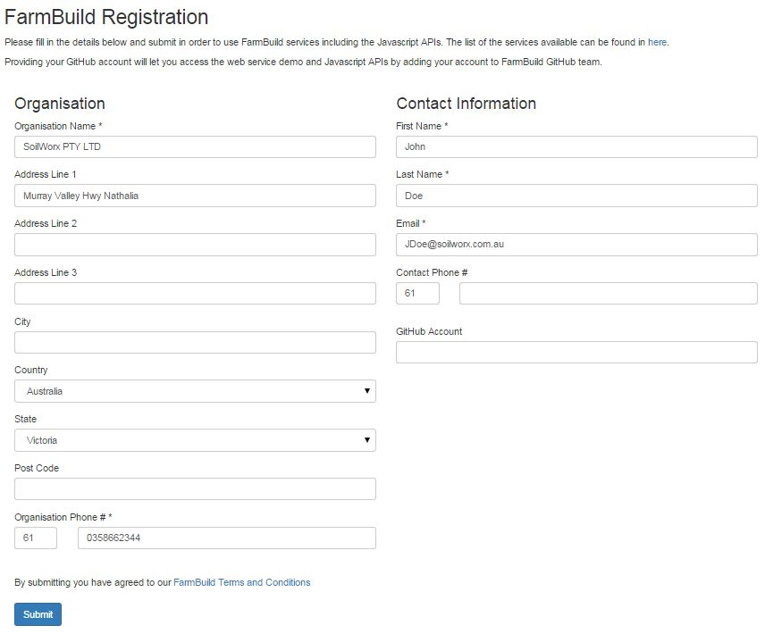

FarmBuild registration is a once off process to:
- capture FarmBuild user information;
- provide access to FarmBuild web services through authentication; and
- provide a communication link to the FarmBuild support services.
You must register to generate a 'CLIENT ID' and a CLIENT SECRET'. These credentials are mandatory for the authentication of the Soil Area Calculation Service.
Registration is important to ensure that all use is correctly reported to Google Analytics, thereby allowing DEDJTR to monitor usage levels.

Successful registration will result in an email with the registration details being sent to the registered email address.
In the event that the CLIENT SECRET is misplaced please click here to regenerate your Client Secret. Otherwise, please contact the FarmBuild Administrator (link contact for details).
For general enquiries or feedback, please email: Andy.McAllister@ecodev.vic.gov.au
Back to FarmBuild